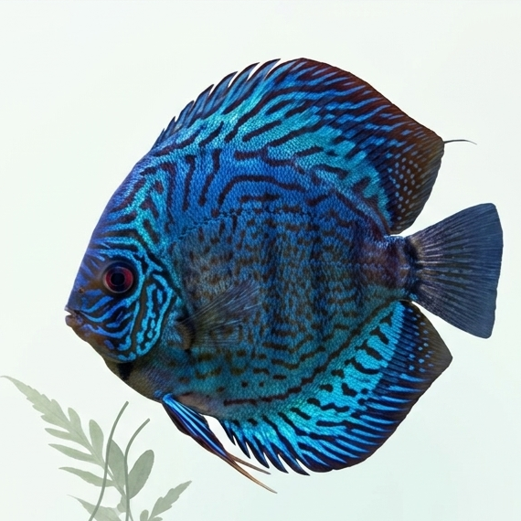

COMPONENT 01
Water quality
Combines aquarium-water appearance analysis with sensor and manually entered readings to interpret water-condition risk. Distinguishes visual categories from measured chemistry.
Explore the research ↗NurtureAqua is an AI-based, explainable decision-support system for Discus fish aquarium management. It brings together four complementary research areas—water quality monitoring and risk prediction, visual disease screening, breeding lifecycle support, and fish measurement with crowding prediction—through a shared mobile workflow. The research combines connected sensing, computer vision, machine learning and evidence-aware explanations.

Discus aquarium owners and breeders often assess water conditions, visible health signs, reproduction and tank loading through separate tests, images and records. The challenge is to connect these observations without confusing the meaning or uncertainty of each result.
Combines aquarium-water appearance analysis with sensor and manually entered readings to interpret water-condition risk. Distinguishes visual categories from measured chemistry.
Explore the research ↗Verifies Discus images, screens selected visible fish conditions, compares owner-reported symptoms and provides source-grounded guidance for interpretation.
Explore the research ↗Supports readiness, egg-condition and fry-care assessments using behavioural observations, images and relevant tank or breeding-cycle history.
Explore the research ↗Estimates fish dimensions and biomass from calibrated images, assesses current crowding, and forecasts future tank-loading conditions.
Explore the research ↗The four specialist services retain their own inputs, models and evidence boundaries. Validation, safety checks and explanatory methods are applied where supported rather than presenting every output as one universal prediction.
Gather aquarium images, environmental readings, breeder observations and calibrated fish photographs relevant to each task.
Apply specialised image classifiers, object detectors, structured-data models and forecast methods in their respective services.
Validate inputs, units, species and calibration; communicate missing evidence and apply documented safety rules where available.
Present visual attributions, model context and source-supported guidance without treating different scores as one accuracy.
A shared FastAPI backend connects four research modules to a single React Native mobile application.
Meet the team ↗Water-image classification, structured numerical risk analysis and supported ESP32 readings.
Discus species verification, YOLOv8 visual screening, Grad-CAM, symptom checks and RAG.
Breeding readiness, egg condition and fry care linked to relevant tank history.
Calibrated fish size, estimated biomass, present crowding and future loading.
Milestones, documents and slides in one organised archive.